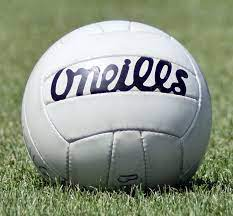
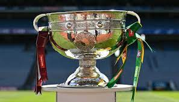

Sports Webpage
Facts about Gaelic Football

- The All-Ireland Championships are the pinnacle of Gaelic games. The Gaelic football championship is known as the Sam Maguire Cup
- The Gaelic Athletic Association (GAA) was founded in 1884 to preserve and promote Gaelic games, including hurling, football, handball, and rounders.
- Gaelic football is a fast-paced game that combines elements of soccer, rugby, and basketball. Teams score by kicking or punching the ball into the opponent’s net, similar to soccer, or over the crossbar for a point, like in rugby.
- Gaelic football is a fast-paced game that combines elements of soccer, rugby, and basketball. Teams score by kicking or punching the ball into the opponent’s net, similar to soccer, or over the crossbar for a point, like in rugby.
- Croke Park is the largest stadium in Ireland and serves as the headquarters of the GAA. It has a capacity of over 82,000 spectators and hosts major Gaelic games events.
The All-Ireland Championships

- The Sam Maguire Cup (Irish: Chorn Sam Mhic Uidhir), often referred to as Sam or The Sam, is a trophy awarded annually by the Gaelic Athletic Association (GAA) to the team that wins the All-Ireland Senior Football Championship
- The old trophy was retired in 1988 due to damages
- Dublin are the current champions